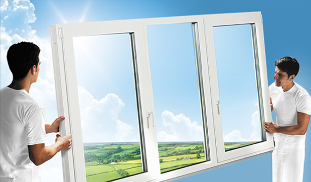
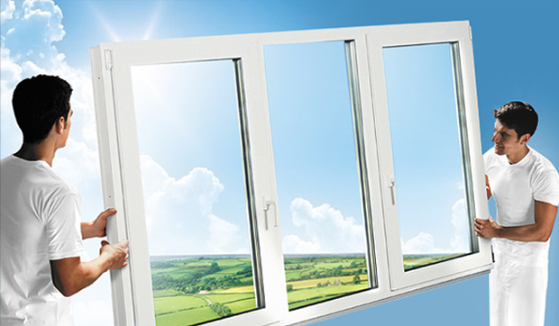

Doprava zdarma
Servis
Poradenstvo
Montáž a demontáž
Systém Zendow
Päťkomorový systém Zendow so stavebnou hĺbkou 70 mm je vhodný pre všetky typy stavieb a rekonštrukcií. Plastové okná využívajú jedinečnú koncepciu, ktorá umožňuje prevedenie vrátane alebo bez stredového tesnenia. Zendow je obohatený o systém dorazového tesnenia, ktoré zaisťuje dokonalý a spoľahlivý odvod vody. Okná sú vďaka nemu vysoko zvukotesné. Okná Zendow majú hladký povrch, ktorý zaručuje ľahkú údržbu a čistenie.
Plastové okná Zendow sú k dostaniu v dvoch dizajnových variantoch s rovným alebo predsadeným krídlom. Môžu byť potiahnuté fóliou, ktorá oknu dodá jasnú sýtu farbu od šedej cez oceľovo modrú až po farbu zlatého dubu. Fólia navyše verne napodobňuje štruktúru dreva.
Vlastnosti profilu plastových okien Zendow:
- elegantný a zaoblený tvar
- tepelná izolácia - Uf =1,21 W/m2.K
- zvuková izolácia - Rw až 43 dB (podľa použitého skla)
- sú opatrené euro drážkou pre kovanie, osová vzdialenosť 13 mm
- vysoká bezpečnosť proti vlámaniu
Systém Inoutic Prestige
Profil plastových okien Inoutic Prestige je vyrábaný zo stabilizovaného tvrdého PVC - vďaka tomu má okenný systém Inoutic Prestige dlhú životnosť pri stálej kvalite. Robustný, pevný profil Inoutic Prestige je veľmi trvanlivý a odolný. Hladký povrch navyše nevyžaduje žiadnu zvláštnu údržbu a odoláva všetkým poveternostným podmienkam.
Šesťkomorový systém zo stavebnou hĺbkou 76 mm, stredovým a dorazovým tesnením je vhodný pre všetky typy stavieb a rekonštrukcií.
Profil Inoutic Prestige ponúka elegantný dizajn vrátane 3 variantov krídiel - rovné krídlo a 2 varianty predsadeného krídla (zaoblené a hranaté). K dispozícií je farebná a povrchová úprava.
Deceuninck ďalej ponúka variant certifikovaný pre energeticky pasívne domy a variant s hliníkovým opláštením. Táto široká škála doplnkov umožňuje takmer neobmedzené konštrukčné a dizajnové riešenia projektov Vášho domu alebo bytu!
Vlastnosti profilov plastových okien Inoutic Prestige:
- tepelná izolácia - Uf = 1,1W/m2.K
- variant pre nízko energetické domy s vypenenými komorami - Uf=0,9W/m2.K; Uw=0,74W/m2.K
- zvuková izolácia - Rw až 47 dB (podľa použitého skla)
- sú opatrené euro drážkou pre kovanie, osová vzdialenosť 13 mm
- vysoko zabezpečené proti vlámaniu
- recyklovateľný materiál
Vplyv počtu komôr na tepelnotechnické vlastnosti
plastových profilov
Achillovou pätou energetickej hospodárnosti budov boli donedávna najmä okenné konštrukcie. Na efektívnom riešení tepelných strát obvodových plášťov budov sa podieľali aj výrobcovia plastových profilov. Takmer dokonale tesniace výplne otvorov vyrobených z viackomorových plastových profilov sa spolu s kvalitným zasklením podpísali pod zlepšenie tepelnoizolačných vlastností okien a dnes hravo spĺňajú požiadavky normy. Predpoklad čoraz viac sa sprísňujúcich požiadaviek však núti zamyslieť sa, či práve ďalšie zvyšovanie počtu komôr bude viesť k želaným hodnotám.
Počet komôr verzus tepelnoizolačné vlastnosti
Zvyšovanie počtu komôr prináša okrem zlepšenia tepelnoizolačných vlastností rámu aj odolnosť proti povrchovej kondenzácii vody a tvarovú stálosť. Pri výbere okien však treba brať do úvahy prechod tepla otvorovou konštrukciou ako celkom. Rámový profil tvorí 20 až 30 % plochy výplňovej konštrukcie. Výpočty a simulácie dokázali, že pri počte komôr viac ako šesť sa tepelnotechnické vlastnosti rámu zlepšia iba do určitej miery. Preto spolu s počtom komôr treba zväčšovať aj stavebnú hĺbku profilu. Optimálny súčiniteľ prechodu tepla celým oknom tak možno dosiahnuť plastovými rámami s piatimi až šiestimi komorami so stavebnou hĺbkou od 70 mm v kombinácii s kvalitnými tepelnoizolačnými dvojsklami, prípadne trojsklami. Práve vhodným zložením a usporiadaním zasklenia, ktoré bude podporené kvalitným rámovým profilom, možno získať lepšie tepelnoizolačné vlastnosti okennej konštrukcie. Zväčšovanie stavebnej hĺbky aj počtu komôr prináša čoraz vyššie vstupné náklady, ktoré cenu okna predražujú. Tepelné straty sa najúčinnejšie eliminujú viacnásobnými izolačnými zaskleniami, ktorých priestor je vyplnený vzácnym plynom (argón, kryptón), kombinovanými s kvalitnými viackomorovými rámovými profilmi, ktorých komory sú čiastočne alebo úplne vyplnené izoláciou.
Variabilnosť riešení Deceuninck
Rôznorodosť požiadaviek investorov neumožňuje vytvoriť univerzálne riešenie vhodné pre každú stavbu. Stavebné systémy, medzi ktoré patria aj plastové profily okenných rámov, musia byť dostatočne variabilné a schopné prispôsobiť sa všetkým vstupným faktorom pri zachovaní maximálnej kvality. Spoločnosť Deceuninck preto prichádza s troma rozličnými systémami plastových profilov, ktoré majú schopnosť splniť akékoľvek predstavy budúceho užívateľa. V praxi sa osvedčil najmä systém Zendow so stavebnou hĺbkou 70 mm a s piatimi komorami, ktorý dosahuje optimálny súčiniteľ prechodu tepla rámom Uf = 1,21 W/(m2 . K). Vyrába sa v dvoch variantoch celoobvodového tesnenia (stredové a dorazové tesnenie). Exkluzívnym reprezentantom sortimentu je šesťkomorový profil Inoutic Prestige so stavebnou hĺbkou rámu 76 mm. Systém vyniká mimoriadnou variabilnosťou tvarov aj zloženia, preto je vhodný pre akýkoľvek typ stavby. Základné vyhotovenie profilu dosahuje Uf = 1,1 W/(m2 . K). Variant s vyplnenými komorami so špeciálnou izoláciou Inoutic odolnou proti vode spĺňa vďaka Uf = 0,9 W/(m2 . K) aj náročné požiadavky architekta či investora. Jeho tepelnoizolačné vlastnosti ho predurčujú na výrobu výplní otvorov v nízkoenergetických stavbách.
{kind=link}
{kind=link}
Ján Klačanský
Malá kamenná 8
949 01 Nitra
Kontakt
0948 535 783